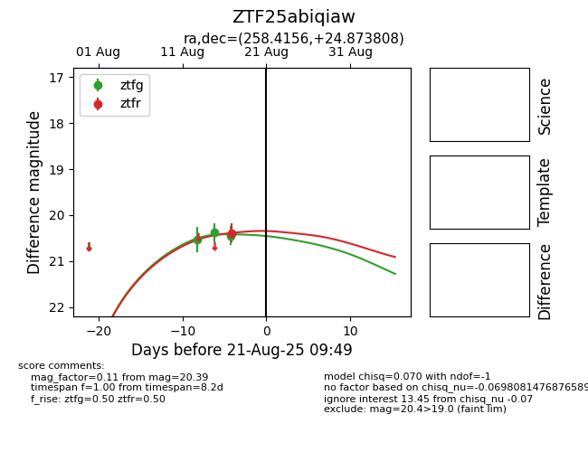

Target ZTF25abiqiaw at 2025-08-21 09:49, see:
FINK: fink-portal.org/ZTF25abiqiaw
Lasair: lasair-ztf.lsst.ac.uk/objects/ZTF25abiqiaw
ALeRCE: alerce.online/object/ZTF25abiqiaw
alt names
ZTF25abiqiaw (ztf,alerce)
coordinates:
equatorial (ra, dec) = (258.4156,+24.87381)
galactic (l, b) = (46.7515,+31.72964)
photometry
last ztfg=20.44, ztfr=20.39
3 ztfg, 1 ztfr detections
